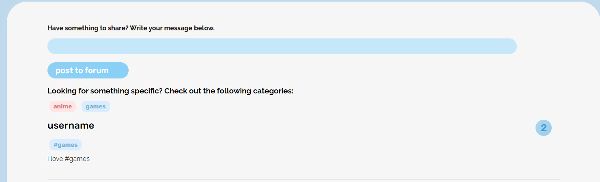
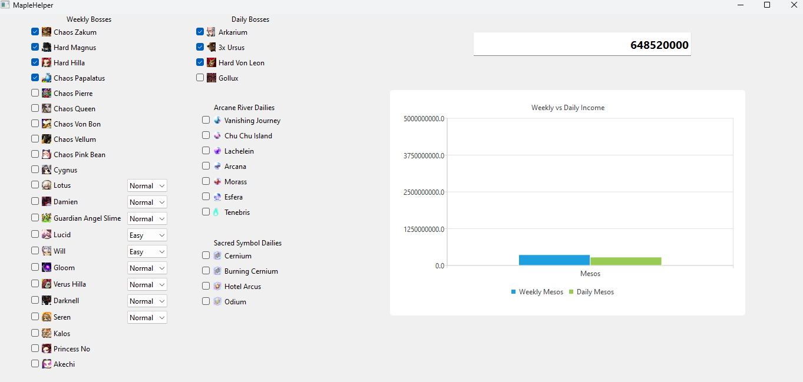

Hello, I'm Anson
A full stack developer that is obsessed with delivering great user experiences.
About Me
Hello! I'm Anson Yu, a recent graduate from the University of California, Merced. I am proficient with backend development using Python, Flask, and Django. For frontend, I usually use HTML and seldomly use React, but that will be changing soon as I'm currently making a project with it. I've used various database services like SQLLite, SQLAlchemy, and MongoDB to host data for various projects.
Outside of work, I go out for hikes, play video games, do crossword puzzles, and occasionally read blogs about how to create user-friendly experiences.
Projects
Social Feed
A forum that focused on two emerging interests on UC Merced post-COVID: anime and gaming. Social Feed aimed to be a place for UC Merced students to simply post gaming or anime related threads. I was responsible for the backend API of the forum that allowed users to create an account, post threads, view threads, and reply to threads. I also contributed to the administrative actions using the Flask-Admin package and stored all of the data using SQLLite as the database and SQLAlchemy to create queries.
Technologies: HTML, CSS, Python, Flask, Git, JavaScript
Mushroom Checklist
A checklist application that I made using Qt and C++. This was my first application that I developed using the Qt framework for an online game. It would allow users to check off each activity they completed and return the amount of online currency that would be obtained. I also learned about states and applied the concept with a graph that updates with every user action to the checklist.
To ensure users would be able to differentiate between the difference between a daily and weekly activity on the graph, I set it so the daily activities were colored green and the weekly activities were marked as blue. As of 7/21/22, this project has been outdated due to UI enhancements in the game.
Technologies: Qt, C++
Contact Me!